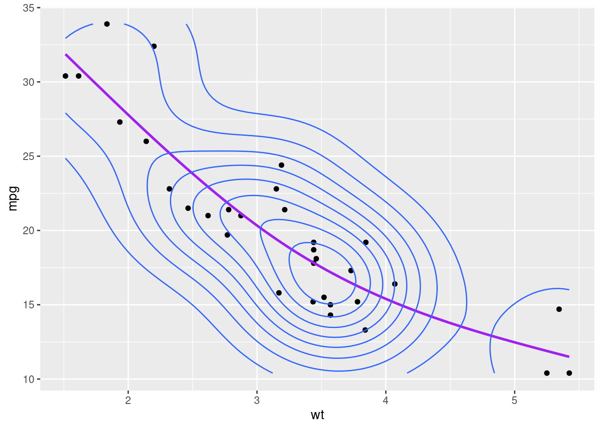
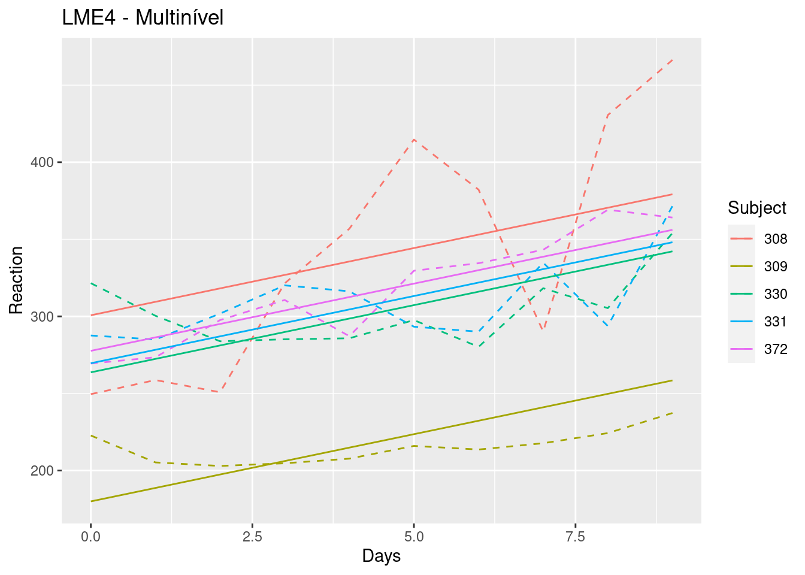

Mostrar código-fonte
library(tidyverse)
library(janitor)
library(mgcv)library(tidyverse)
library(janitor)
library(mgcv)Podemos dizer que os Modelos Aditivos Generalizados (GAMs) são de certa maneira uma evolução dos Modelos Lineares Generalizados (GLMs).
Modelos lineares (LM) assumem que há um relacionamento linear entre a variável dependente e preditoras. Já os modelos lineares generalizados (GLM), assumem linearidade na escala de ligação (lado direito da equação), porém conseguem capturar relações não lineares através de função de ligação canônica, porém ainda monotônica (ou subindo ou descendo). Já os modelos aditivos generalizados (GAMs), não assumem nenhuma relação, permitindo ondulações para cima ou para baixo.
De forma geral, os GAMs utilizam funções de alisamento (smooth) em diversas seções dos dados de forma a encontrar a melhor forma de ajuste para o modelo.
O poder explitivo destes modelos são bem menos claros que os modelos lineares ou mesmo os GLMs, ainda assim, se encontram em uma situação menos obscuras que os modelos “black-box” como as redes neurais ou florestas randômicas.
De maneira resumida, enquanto temos em um modelo linear simples algo como:
\hat{Y}_i = \beta0 + \beta1 * X1_i, em uma GAM, temos funções do lado linear:
\hat{Y}_i = \beta0 + f(X1_i)
É claro, que ainda temos a função de ligação canônica g(\hat{y}), para ainda utilzarmos as distribuições de bernoulli, poisson, etc. Portanto, podemos generalizar os modelos aditivos como:
g(\hat{Y}_i) = \beta0 + f(X1_i) + f(X2_i) + ... + f(XK_i)
A idéia é adicionarmos uma série de funções exponenciais de forma alisada (smooth) afim de obter o melhor ajuste do modelo.
Para os próximos exemplos iremos utilizar a base de dados MTCARS, ou seja, a mesma que utilizamos no texto sobre Regressão Linear
# Selecionar base mtcars
df <- mtcars
df <- df |> mutate(across(.cols = c(am, cyl, vs, gear, carb), .fns = as_factor))
dfVamos novamente visualizar as correlações entre a variável de saída mpg e duas variáveis do dataset (hp e wt). Já vimos em nosso texto sobre Regressão Linear, que tais variáveis são estatisticamente significante mesmo após procedimento step-wise, portanto não iremos repetir toda a análise novamente.
PerformanceAnalytics::chart.Correlation(df[c("mpg", "hp", "wt")])
Podemos observar que a variável hp, não segue um padrão “normal” e como fizemos no texto sobre regressão linear, uma opção seria fazer uma transformação (ex. log) para deixá-la mais normalizada.
Aqui, a idéia é similar, porém, ao invés de simplesmente ficarmos restritos à transformações específicas, podemos utilizar diversas funções de alisamento não-paramétricas (splines) com restições de estimativas (ex REML) para criar os alisamentos (smooths).
Vamos comparar inicialmente com um modelo univariado utilizando como dependente (mpg) e explicativas (hp e wt).
mod_gam_ln_00 <- lm(mpg ~ hp + wt, data= df)
summary(mod_gam_ln_00)
Call:
lm(formula = mpg ~ hp + wt, data = df)
Residuals:
Min 1Q Median 3Q Max
-3.941 -1.600 -0.182 1.050 5.854
Coefficients:
Estimate Std. Error t value Pr(>|t|)
(Intercept) 37.22727 1.59879 23.285 < 2e-16 ***
hp -0.03177 0.00903 -3.519 0.00145 **
wt -3.87783 0.63273 -6.129 1.12e-06 ***
---
Signif. codes: 0 '***' 0.001 '**' 0.01 '*' 0.05 '.' 0.1 ' ' 1
Residual standard error: 2.593 on 29 degrees of freedom
Multiple R-squared: 0.8268, Adjusted R-squared: 0.8148
F-statistic: 69.21 on 2 and 29 DF, p-value: 9.109e-12Se plotarmos a variável dependente (mpg) pelas explicativas (hp e wt), e suas linhas de regressão, temos:
df |>
ggplot(aes(hp, mpg)) +
geom_point() +
geom_smooth(method="lm", se=F)+
geom_density2d()
df |>
ggplot(aes(wt, mpg)) +
geom_point() +
geom_smooth(method="lm", se=F)+
geom_density2d()Podemos observar que, a variável hp, não se ajusta muito bem com uma simples reta, principalmente para valores mais altos.
Aqui temos um AIC de:
AIC(mod_gam_ln_00)[1] 156.6523Podemos pensar, e se ao invés de termos um modelo linear, criarmos um modelo onde pudéssemos capturar as variações desta variável. É exatamente esta flexibilidade que os modelos aditivos nos dão.
Vamos criar um modelo aditivo, porém criando uma função de alisamento (smooth) apenas na variável “hp”. Para isto, devemos selecionar uma forma funcional básica para criar para criar a função de alisamento. De forma resumida, através de um algoritmo de penalisação da função de máxima verossimilhança (REML), a função faz algumas quebras (knots) de forma a encontrar omelhor ajuste. Podemos definir os knots e outros parêmetros manualmente, mas em geral, acabamos definindo inicialmente apenas a forma funcional básica. Em nosso exemplo, iremos utilzar uma forma de regressão cúbica (“cr”).
A seguir, criamos um modelo similar ao anterior, porém aplicando uma função de alisamento (smooth) com forma funcional cúbica.
mod_gam_01 <- gam(mpg ~ s(hp, bs = "cr") + wt, data= df)Se visualizarmos, teremos:
df |>
ggplot(aes(hp, mpg)) +
geom_point() +
geom_smooth(method="gam", formula = y ~ s(x, bs = "cs"), se=F, color = "red")+
geom_density2d()
df |>
ggplot(aes(wt, mpg)) +
geom_point() +
geom_smooth(method="gam", formula = y ~ x, se=F)+
geom_density2d()
Se compararmos os critérios de Akaike (AIC) de ambos os modelos teremos:
modelos <- list(OLS = mod_gam_ln_00, GAM_01 = mod_gam_01)
df_AIC <- cbind(Criterio = "AIC", map_df(modelos, ~AIC(.)))
df_AICPodemos ajustar de forma similar a variável explicativa wt, de forma a capturar o aspecto não linear nos valores mais altos.
mod_gam_02 <- gam(mpg ~ s(hp, bs = "cr") + s(wt, bs = "cr"), data= df)
df_AIC <- cbind(df_AIC, GAM_02 = AIC(mod_gam_02))
df_AICdf |>
ggplot(aes(hp, mpg)) +
geom_point() +
geom_smooth(method="gam", formula = y ~ s(x, bs = "cs"), se=F, color = "red")+
geom_density2d()
df |>
ggplot(aes(wt, mpg)) +
geom_point() +
geom_smooth(method="gam", formula = y ~ s(x, bs = "cs"), se=F, color = "red")+
geom_density2d()
Podemos ainda definir os valores do knots manualmente, caso contrário, eles serão atribuídos de forma otimizado através do algoritmo de validação cruazada generalizada (Generalized Cross Validation).
Por exemplo, podemos definir em 3 segmentos nossa função de regressão cúbica conforme fizemos anteriormente:
df |>
ggplot(aes(hp, mpg)) +
geom_point() +
geom_smooth(method="gam", formula = y ~ s(x, bs = "cs", k = 3), se=F, color = "purple")+
geom_density2d()
df |>
ggplot(aes(wt, mpg)) +
geom_point() +
geom_smooth(method="gam", formula = y ~ s(x, bs = "cs", k =3), se=F, color = "purple")+
geom_density2d()
Se comparamos os valores estimados do modelo linear com o modelo aditivo, vemos a diferença.
df$fit_ln <- mod_gam_ln_00$fitted.values
df$fit_gam_02 <- mod_gam_02$fitted.values
df |>
ggplot(aes(mpg, mpg)) +
geom_line(linetype = "dashed") +
geom_smooth(aes(y = fit_ln), se=F) +
geom_smooth(aes(y = fit_gam_02), se=F, color = "purple") 
Claro que podemos ainda testar modelos com transformações de Box-Cox na variável dependente para melhorar ainda mais a captura da variância:
lambda_BC <- car::powerTransform(df$mpg)
lambda_BC Estimated transformation parameter
df$mpg
0.02956537 df$mpg_bc <- (((df$mpg ^ lambda_BC$lambda) - 1) / lambda_BC$lambda)
mod_gam_02_bc <- gam(mpg_bc ~ s(hp, bs = "cr") + s(wt, bs = "cr"), data= df)
df$fit_gam_02_bc <- (((mod_gam_02_bc$fitted.values*(lambda_BC$lambda))+
1))^(1/(lambda_BC$lambda))df |>
ggplot(aes(mpg, mpg)) +
geom_line(linetype = "dashed", aes(color = "A")) +
geom_smooth(aes(y = fit_ln, color = "B"), se=F) +
geom_smooth(aes(y = fit_gam_02, color = "C"), se=F) +
geom_smooth(aes(y = fit_gam_02_bc, color = "D"), se=F) +
labs(y="fitted") +
scale_color_manual(name = "Modelo",
labels = c("MPG", "OLS", "GAM", "GAM-BoxCox"),
values=c("black", "red", "purple", "green"))
Podemos ver que tivemos um pequeno ganho no ajuste, principalmente quando os valores de mpg são bem pequenos.
Existem uma séria de formas funcionais básicas, além da possibildade de mapeamento de efeitos aleatórios e outros ajustes que permitem com que os modelos aditivos sejam muito poderosos em termos de predição, mas também ofereçam maior explicabilidade que modelos mais estocásticos como redes neurais ou florestas randômicas.
Para maiores informações, sugerimos: